전자캐드기능사 (2008-07-13 기출문제)
1과목: 전기전자공학(대략구분)
1. JFET의 전달특성곡선에서 드레인전류(Io)를 나타내는 관계식으로 가장 적합한 것은? (단, VGS는 게이크와 소스 사이의 전압이고, IDSS는 VGS=0일때의 포화 드레인 전류, VP는 펀치 오프 전압이다.)
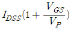
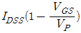
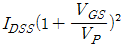
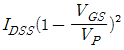
(정답률: 27%)

2. 다음과 같은 연산증폭회로의 입ㆍ출력식으로 가장 적합한 것은?
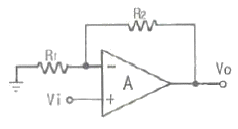
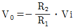
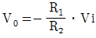
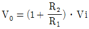
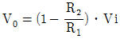
(정답률: 33%)
3. 다음 트랜지스터 회로는 어떤 바이어스 회로인가?(오류 신고가 접수된 문제입니다. 반드시 정답과 해설을 확인하시기 바랍니다.)
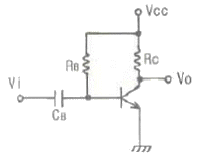
- 고정바이어스 회로
- 전압궤환바이어스 회로
- 전류궤환바이어스 회로
- 혼합바이어스 회로
(정답률: 41%)
4. 다음 중 입력임피던스가 매우 높고 출력임피던스는 낮아서 버퍼단으로 많이 사용되는 증폭회로는?
- 푸시풀 증폭회로
- 베이스 접지 증폭회로
- 이미터 접지 증폭회로
- 컬렉터 접지 증폭회로
(정답률: 28%)
5. 다음 중 온도상승과 더불어 고유저항치가 떨어지는 부 온도특성의 물질은?
- W(텅스텐)
- Al(알미늄)
- Si(실리콘)
- Au(금)
(정답률: 57%)
6. 120[Ω] 저항 3개의 조합으로 얻어지는 가장 작은 합성저항은?
- 10[Ω]
- 20[Ω]
- 30[Ω]
- 40[Ω]
(정답률: 85%)
7. 어떤 저항에 100[V] 전압을 가했더니 2[A]의 전류가 흐르고 480[㎈]의 열량이 발생되었다면 전류가 흐른 시간은?
- 4초
- 6초
- 8초
- 10초
(정답률: 34%)
8. 10[mH]의 자체 인덕턴스에 전류 20[A]를 흘렸을 때 축적되는 에너지는?
- 1[J]
- 2[J]
- 3[J]
- 4[J]
(정답률: 70%)
9. 무궤환시 증폭기의 전압이득이 100일 때 궤환율 0.09의 부궤환을 걸어주면 이득은 얼마인가?
- 10
- 20
- 50
- 100
(정답률: 45%)
10. 아날로그 신호를 디지털 신호로 변환하고 부호화하여 전송하는 방식으로 전화국 등의 유선 통신에서 사용되는 대표적인 변조방식은?
- 진폭 변조
- 펄스수 변조
- 펄스폭 변조
- 펄스부호 변조
(정답률: 48%)
11. R-L-C 직렬회로에서 단자전압이 전류와 동상이 되기 위한 조건은?
- ωL2C2=1
- ω2LC=1
- ωLC=1
- ω=LC
(정답률: 48%)
12. 다음 연산 증폭회로에서 증폭도는 얼마인가? (단, R1=1[㏀], R2=100[㏀]이다.)
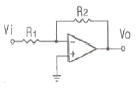
- -0.01
- -1
- -10
- -100
(정답률: 47%)
13. 다음 중 차동증폭기의 동상제거비(CMRR)에 대한 설명으로 가장 적합한 것은?
- 동상제거비는 클수록 좋다.
- 동상이득이 커지면 동상제거비도 커진다.
- 차동이득이 작아지면 동상제거비는 커진다.
- 증폭기의 잡음 출력의 크기는 동상제거비와 관계없다.
(정답률: 39%)
14. 다음 중 부궤환 증폭기에 대한 설명으로 적합하지 않은 것은?
- 증폭도가 증가된다.
- 잡음이 적어진다.
- 찌그러짐이 개선된다.
- 주파수 특성이 좋아진다.
(정답률: 37%)
15. DSB 변조에서 과변조시 일어나는 현상으로 가장 적합한 것은?
- 왜율이 개선된다.
- 발사주파수가 안정된다.
- S/N비가 개선된다.
- 점유 주파수 대역폭이 넓어진다.
(정답률: 50%)
2과목: 전자계산기일반(대략구분)
16. 부동 소수점 표현 방식에 대한 설명으로 옳지 않은 것은?
- 지수부, 가수부로 구성된다.
- 실수를 표현하는 데이터 형식이다.
- 소수점은 맨 오른쪽 끝에 있는 것으로 가정한다.
- 두 개의 부분 각각에 대하여 독립된 연산을 한다.
(정답률: 50%)
17. 다음 그림은 어떤 주소 지정 방식인가?
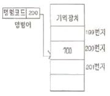
- 즉시주소지정(Immediate Address)
- 직접주소지정(Direct Address)
- 간접주소지정(Indirect Address)
- 상대주소지정(Relative Address)
(정답률: 53%)
18. 플립플롭으로 구성되는 레지스터는 어느 역할을 수행하는가?
- 기억장치
- 연산장치
- 입력장치
- 출력장치
(정답률: 55%)
19. 컴퓨터 시스템에서 하드웨어의 구성을 크게 2가지로 구분할 경우 가장 옳은 것은?
- 중앙처리장치와 연산장치
- 중앙처리장치와 주변장치
- 연산장치와 제어장치
- 제어장치와 주변장치
(정답률: 46%)
20. DASD(Direct Access Storage Device)의 대표적인 것은?
- 자기테이프
- 자기디스크
- 종이테이프
- 라인프린터
(정답률: 66%)
21. 16진수 A983-8A18를 계산한 결과는?
- 75E4
- 75E5
- 1F6B
- 1F99
(정답률: 42%)
22. 어셈블리어의 특징이 아닌 것은?
- 기계어에 비해 프로그램 작성이나 수정이 어렵다.
- 호환성이 없으므로 전문가 외에는 사용하기 어렵다.
- 컴퓨터 동작 원리에 대한 전문 지식이 필요하다.
- 기계어보다 사용하기 편리하다.
(정답률: 50%)
23. 다음 중에서 가장 적은 Bit로 표현 가능한 데이터는?
- 영상 데이터
- 문자 데이터
- 숫자 데이터
- 논리 데이터
(정답률: 68%)
24. 다음 중 단항 연산에 속하지 않는 것은?
- MOVE
- SHIFT
- ROTATE
- AND
(정답률: 60%)
25. 다음 중 C언어에서 연산자의 우선 순위가 제일 높은 것은?
- +
- ( )
- =
- *
(정답률: 71%)
26. 컴퓨터의 용량 1kbyte는 몇 byte인가?
- 100
- 512
- 1000
- 1024
(정답률: 82%)
27. 연산 결과에 다른 각각의 상태 즉 자리 올림(Carry), 부호(Sign), 오버플로우(Overflow) 여부 등을 일시 기억하는 레지스터는?
- 누산기
- 상태 레지스터
- 명령 레지스터
- 프로그램 카운터
(정답률: 55%)
28. 회로도를 설계하는 프로그램의 최종 과정으로서 회로도의 연결정보 및 기호에 정의된 정보를 추출하는 파일을 무엇이라 하는가?
- 거버(Gerber) 데이터
- 네트리스트(Netlist) 데이터
- DRC(Design Rule Check) 데이터
- ERC(Electric Rule Check) 데이터
(정답률: 49%)
29. 전자응용기기에서 여러 종류의 단위 기능을 가지는 요소들을 조합ㆍ구성하여 전체적인 동작이나 기능을 계통도로 그린 도면을 무엇이라 하는가?
- 상세도
- 접속도
- 블록도
- 기초도
(정답률: 67%)
30. 제도의 척도 중 실물의 크기보다 작게 그리는 것은?
- 실척
- 축척
- 배척
- NS
(정답률: 88%)
3과목: 전자제도(CAD) 이론(대략구분)
31. 다음 중 도면의 효율적 관리를 위해 마이크로 필름을 이용하는 이유가 아닌 것은?
- 종이에 비해 보존성이 좋다.
- 재료비를 절감시킬 수 있다.
- 통일된 크기로 복사할 수 있다.
- 복사 시간이 길지만 복원력이 높다.
(정답률: 60%)
32. PCB 제조 공정에서 구리와 은을 제거하기 위한 에칭액은?
- 염화나트륨
- 염화제이철
- 크롬황산
- 수산화나트륨
(정답률: 64%)
33. 표준화 유형 중 기업 또는 공장에서 심의하고 규정하여 기업 또는 공장 내부에서 적용되는 표준은?
- 단체 표준
- 사내 표준
- 국가 표준
- 국제 표준
(정답률: 78%)
34. 국제 및 국가별 규격 명칭 중 국제 표준화 기구의 규격을 나타내는 것은?
- ANSI
- KS
- DIN
- ISO
(정답률: 84%)
35. 인쇄회로기판 설계시 고려해야 할 사항이 아닌 것은?
- 부품 배치
- 부품 높이와 배열
- 부품의 가격
- 부품 부착 간격
(정답률: 82%)
36. CAD시스템에 의한 제품 설계 및 도면 작성의 결과로 볼 수 없는 것은?
- 설계 과정의 능률 향상에 의한 도면의 품질 향상
- 설계 요소의 표준화로 원가 절감
- 수치 계산 결과의 정확성 증가
- 도면 형상의 자유로운 표현
(정답률: 66%)
37. 다음 심벌 중 UJT(단접합 트랜지스터)를 나타내는 심벌은?
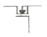
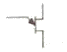
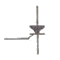
(정답률: 62%)
38. 다음 콘덴서 중 사용할 때 극성에 유의해야 하는 것은?
- 필름 콘덴서
- 페이퍼 콘덴서
- 마이카 콘덴서
- 탄탈전해 콘덴서
(정답률: 77%)
39. 다음 중 CAD 시스템의 1밀(mil)과 같은 길이는?(오류 신고가 접수된 문제입니다. 반드시 정답과 해설을 확인하시기 바랍니다.)
- 1/10 inch
- 1/100 inch
- 1/1000 inch
- 1/10000 inch
(정답률: 61%)
40. PCB 판이 평형을 유지하지 못하고, 구부러진 상태를 나타내는 용어는?
- 돌기(bump)
- 트위스트(twist)
- 휨(bow)
- 결각(indentation)
(정답률: 81%)
41. 다음 중 능동 부품에 속하는 것은?
- 트랜지스터
- 저항기
- 유도기
- 용량기
(정답률: 77%)
42. PCB 도면을 그래픽 출력장치로 인쇄할 경우 프린트 기판에 부품 정보를 나타내는 도면은?
- solder mask
- top silk screen
- solder side pattern
- component side pattern
(정답률: 74%)
43. 다음 중 작업된 PCB 파일의 저장 장소는?
- CPU
- 모니터
- 하드디스크
- 프린터
(정답률: 85%)
44. 다음 중 CAD 시스템의 그래픽 입력장치가 아닌 것은?
- 자판(키보드)
- 스캐너
- 라이트 펜
- 플로터
(정답률: 69%)
45. 전기 회로망에서 전압을 분배하거나 전류의 흐름을 방해하는 역할을 하는 소자는?
- 콘덴서
- 수정 진동자
- 저항
- LED
(정답률: 82%)
46. 트랜지스터에 2SC1815Y라고 씌어 있을 때 C가 의미하는 것은?
- PNP형 고주파용
- PNP형 저주파용
- NPN형 고주파용
- NPN형 저주파용
(정답률: 65%)
47. 전자 회로도 작성시 유의사항 중 옳지 않은 것은?
- 대각선과 곡선은 가급적 피한다.
- 도면 기호와 접속선의 굵기는 원칙적으로 같게 한다.
- 선의 교차가 적고 부품이 도면 전체에 고루 분포되도록 그린다.
- 신호의 흐름은 도면의 오른쪽에서 왼쪽으로 아래에서 위로 그린다.
(정답률: 80%)
48. 한국산업규격 분류기호 중 전기, 전자, 통신에 해당하는 것은?
- KS A
- KS B
- KS C
- KS D
(정답률: 82%)
49. 다음 전자 소자 중 2단자 반도체 소자는?
- 다이오드(DIODE)
- 트라이액(TRIAC)
- 실리콘제어정류기(SCR)
- 전계효과트랜지스터(FET)
(정답률: 63%)
50. 부품의 배치가 완료된 이후 핀(pin) 간의 배선 작업을 일반적으로 무엇이라 하는가?
- 웨이퍼
- 블로킹
- 애칭
- 라우팅
(정답률: 60%)
51. 전자ㆍ통신용 기기의 부품 배치도를 그릴 때 고려하여야 할 사항 중 옳지 않은 것은?
- IC의 경우 1번 핀의 위치를 반드시 표시한다.
- 부품 상호간의 신호가 유도되지 않도록 한다.
- PCB 기판의 점퍼선은 절대로 표시하지 않는다.
- 부품의 종류, 기호, 용량, 외형도, 핀의 위치, 극성 등을 표시하여야 한다.
(정답률: 75%)
52. 다음 그림은 세라믹 콘덴서이다. 용량 값은?
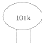
- 0.01[μF]
- 10[μF]
- 1000[μF]
- 0.0001[μF]
(정답률: 65%)
53. CAD 시스템을 도입하는 가장 큰 목적을 나타낸 것 중 옳지 않은 것은?
- 도면 작성의 자동화
- 작업시간 단축
- 효율적 관리
- 복잡한 명령과 실행
(정답률: 81%)
54. 다음 중 A1 제도 용지의 크기는 얼마인가? (단, 단위는 [㎜]이다.)
- 841X1189
- 594X841
- 420X594
- 297X420
(정답률: 61%)
55. 다음은 다층인쇄회로(PCB) 공정 중 한 단계이다. 무엇을 설명한 것인가?
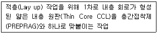
- 노광
- 본딩
- 절단
- 성형체
(정답률: 76%)
56. 다음 다이오드 중 정전압 용도로 쓰이는 것은?
- 일반 다이오드
- 제너 다이오드
- 터널 다이오드
- 포토 다이오드
(정답률: 86%)
57. 프린트 기판 설계시 배선으로 인한 인덕턴스 발생을 줄이기 위한 방법으로 가장 올바른 것은?
- 전원 라인을 가늘고, 길게 배선한다.
- 전원 라인을 가늘고, 짧게 배선한다.
- 전원 라인을 굵고, 길게 배선한다.
- 전원 라인을 굵고, 짧게 배선한다.
(정답률: 82%)
58. Layout에서 Zoom in의 설명으로 적합한 것은?
- 보드 상의 선택 영역을 확대한다.
- 보드 상의 선택 영역을 축소한다.
- 보드 상의 모든 객체를 보여준다.
- 보드 상의 일부 객체를 보여준다.
(정답률: 77%)
59. 도면으로부터 위치 좌표를 읽어 들이는데 사용하는 CAD 시스템의 입력 장치는?
- 마우스(mouse)
- 트랙볼(trackball)
- 디지타이저(digitizer)
- 이미지스캐너(image scanner)
(정답률: 69%)
60. CAD Tool을 사용하여 Analog 회로 PCB를 설계하고자 할 때 힘(Hum)이나 잡음(Noise) 등을 최소화 하기 위해 가장 신중한 패턴 설계가 요구되는 부분은?
- 접지(Ground) 라인
- 버스(Bus) 라인
- 신호(Signal) 라인
- 바이어스(Bias) 라인
(정답률: 60%)
이 식은 JFET의 전달특성곡선에서 드레인전류(Io)를 나타내는 관계식이다. 이 식에서 VGS는 게이트와 소스 사이의 전압이며, IDSS는 VGS=0일때의 포화 드레인 전류, VP는 펀치 오프 전압이다.
정답은 "" 이다. 이유는 이 식에서 VGS가 증가할수록 Io는 감소하기 때문이다. 이는 JFET의 특성으로, 게이트와 소스 사이의 전압이 증가하면 채널의 폭이 감소하여 드레인 전류가 감소하는 것이다. 또한, VGS가 VP에 가까워질수록 Io는 거의 0에 가까워지며, 이는 펀치 오프 현상 때문이다.